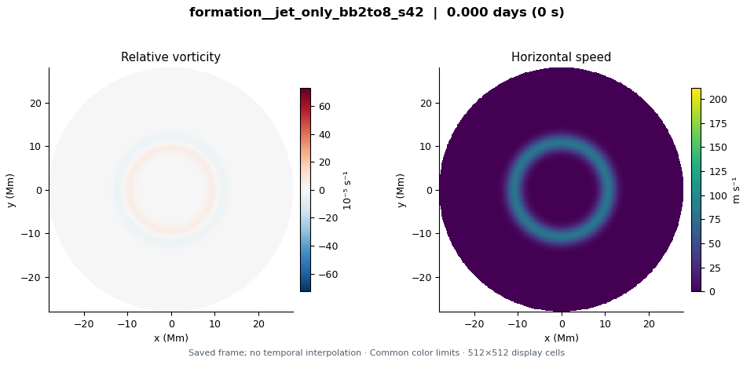
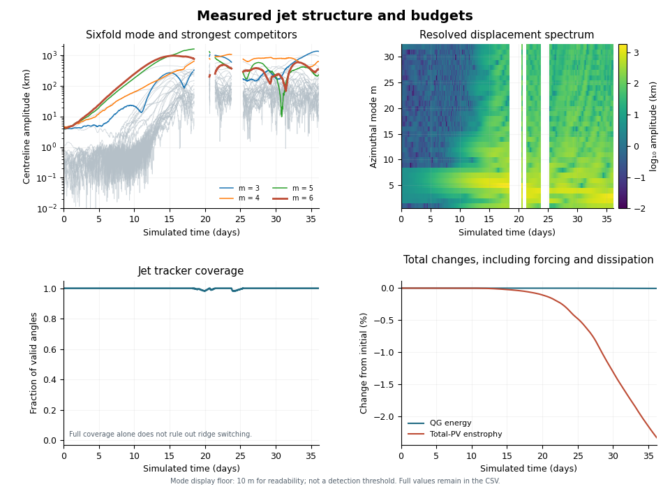

Saved flow evolution

Saved frame 1
Every frame is an actual saved state. Color limits are fixed across every frame and run in this gallery. The maps show the science disk, not a global sphere. No temporal interpolation or optical flow is used.
Discrete frame playback
Two saved frames per playback second, with equal display duration per frame. This is a sequence of sparse snapshots, not motion resolved between them. Actual model time is printed in each frame.
Jet measurements and total budgets

The original jet tracker first loses complete angular coverage at 18.287 days. Later missing mode values remain gaps; this is not a measured physical lifetime.
Amplitudes come from the runtime jet-centreline tracker and are provisional without field validation. Weak modes depend on interpolation. Interpret mode growth in the context of the stated initial disturbance and the competing modes. No late pattern drift is fitted. Energy and enstrophy curves include convection, dissipation and numerical effects; they are not conservation-error estimates.